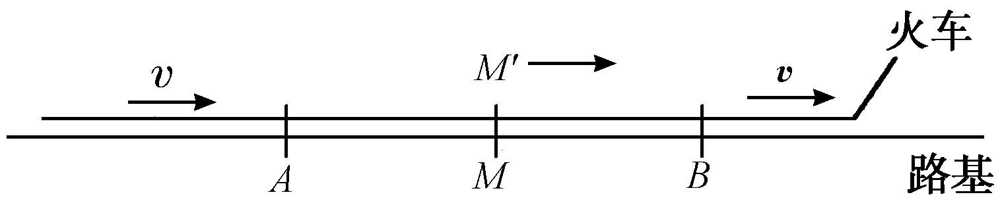

到目前为止，我们的论述一直是参照我们称之为“铁路路基”的一个特定的参考物体来进行的。假设有一列很长的火车，以恒速v 沿着图1所标明的方向在轨道上行驶。在这列火车上旅行的人们可以很方便地把火车当作刚性参考物体(坐标系)；他们参照火车来观察一切事件。因而，在铁路线上发生的每一个事件也在火车上某一特定的地点发生。而且完全和相对于路基所作的同时性定义一样，我们也能够相对于火车作出同时性的定义。但是，作为一个自然的推论，下述问题就随之产生：

图1
对于铁路路基来说是同时的两个事件(例如A、B 两处雷击)，对于火车来说是否也是同时的呢?我们将直接证明，回答必然是否定的。
当我们说A、B 两处雷击相对于路基而言是同时的，我们的意思是： 在发生闪电的A 处和B 处所发出的光，在路基A →B 这段距离的中点M 相遇。但是事件A 和B 也对应于火车上的A 点和B 点。令M′ 为在行驶中的火车上A →B 这段距离的中点。正当雷电闪光发生的时候 [1] ，点M′ 自然与点M 重合，但是点M′ 以火车的速度v 向图中的右方移动。如果坐在火车上M′ 处的一个观察者并不具有这个速度，那么他就总是停留在M 点，雷电闪光A 和B 所发出的光就同时到达他这里，也就是说正好在他所在的地方相遇。可是实际上(相对于铁路路基来考虑)这个观察者正在朝着来自B的光线急速行进，同时他又是在来自A的光线的前方向前行进。因此这个观察者将先看见自B 发出的光线，后看见自A 发出的光线。所以，把列车当作参考物体的观察者就必然得出这样的结论，即雷电闪光B 先于雷电闪光A 发生。这样我们就得出以下的重要结果：
对于路基是同时的若干事件，对于火车并不是同时的，反之亦然(同时性的相对性)。每一个参考物体(坐标系)都有它本身的特殊的时间；除非我们讲出关于时间的陈述是相对于哪一个参考物体的，否则关于一个事件的时间的陈述就没有意义。
在相对论创立以前，在物理学中一直存在着一个隐含的假定，即时间的陈述具有绝对的意义，亦即时间的陈述与参考物体的运动状态无关。但是我们刚才看到，这个假定与最自然的同时性定义是不相容的；如果我们抛弃这个假定，那么真空中光的传播定律与相对性原理之间的抵触(详见第7节)就消失了。
这个抵触是根据第6节的论述推论出来的，这些论点现在已经站不住脚了。在该节我们曾得出这样的结论： 在车厢里的人如果相对于车厢每秒走距离w ，那么在每一秒钟的时间里他相对于路基也走了相同的一段距离。但是，按照以上论述，相对于车厢发生一特定事件所需要的时间，绝不能认为就等于从路基(作为参考物体)上判断的发生同一事件所需要的时间。因此我们不能硬说在车厢里走动的人相对于铁路线走距离w 所需的时间从路基上判断也等于一秒钟。
此外，第6节的论述还基于另一个假定。按照严格的探讨看来，这个假定是任意的，虽然在相对论创立以前人们一直在物理学中隐藏着这个假定。
[1] 从路基上判断。